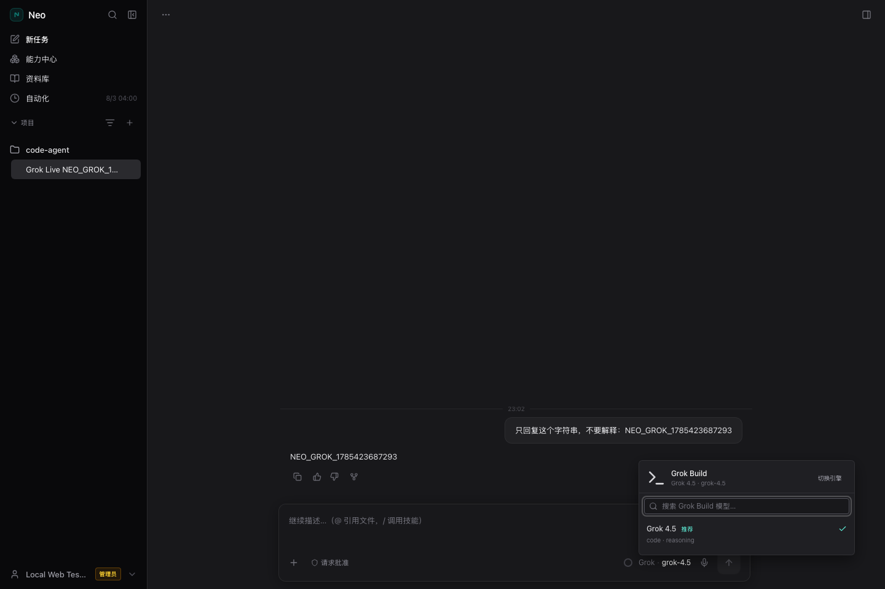
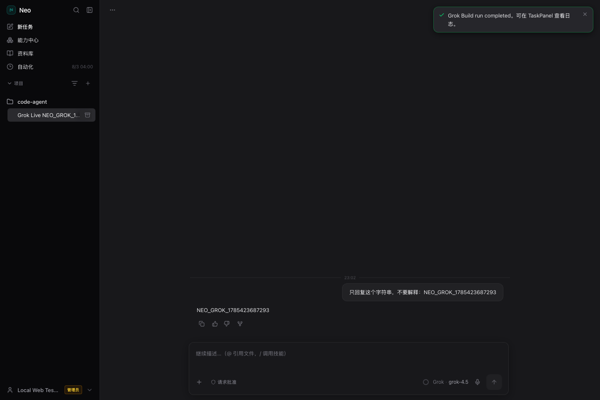

Neo × Grok Build 实机验收证据
证据来自本机官方 Grok Build CLI 和 Neo 的真实 Web runtime。没有使用静态 mock，也没有读取、复制或持久化 Grok 登录凭证。
PASS · 真实账号与真实模型客户端grok 0.2.114
登录grok.com 已认证
实机模型目录grok-4.5
传输streaming-json
模型选择弹窗
会话已切换到 Grok Build；弹窗只展示 grok-4.5，模型名、模型 ID、推荐状态和能力信息均来自运行时目录。

真实会话闭环
Neo 经 /api/run 发送每轮随机 nonce，Grok Build 返回完全相同的正文；SSE 与持久化会话消息同时命中。

验证边界
本轮实机证明安装探测、官方登录探测、模型枚举、引擎与模型选择、streaming-json 正文解析、会话持久化和真实 UI 展示。工具、子 Agent、跨会话记忆与联网搜索在 P0 adapter 中保持关闭；外部会话恢复仍按 fail-closed 标记为不可恢复。